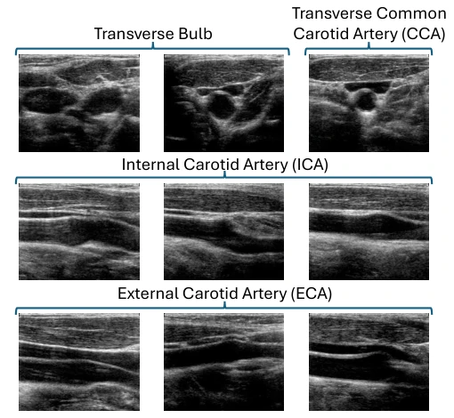
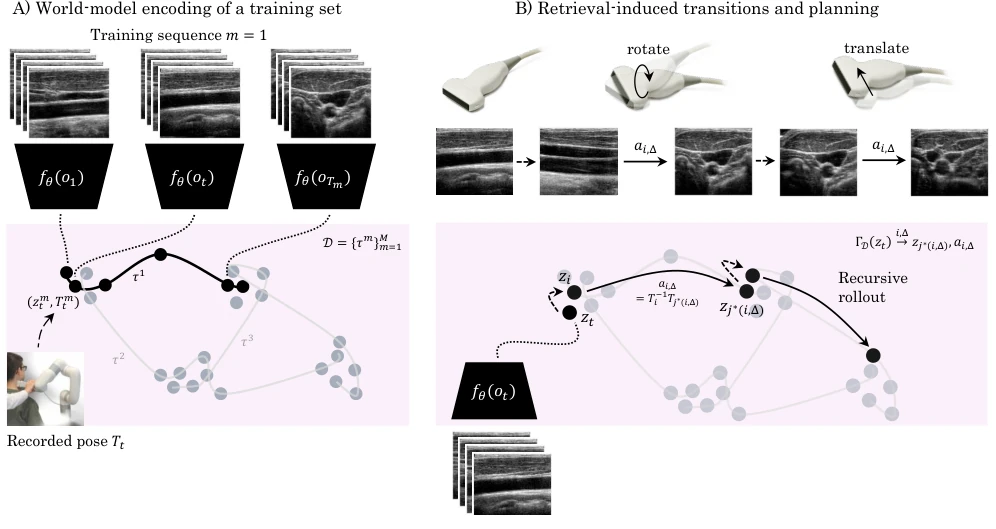
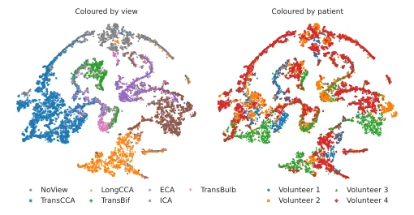
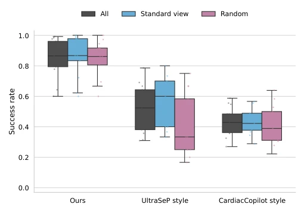
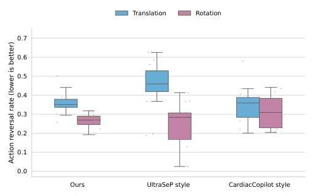
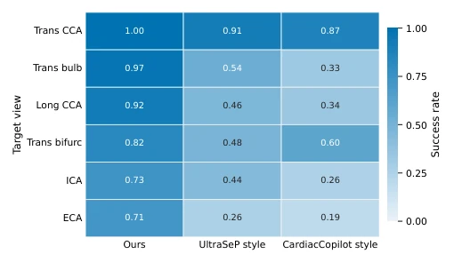

This paper taught a lesson to the ultrasound navigation community: stop always trying to fit the physical world with complex parametric models; instead, directly use "human expert operation videos" as a world model. It is simple and direct yet effective. The authors upgraded ultrasound operation guidance from "single-step prediction" to "retrieval-based multi-step planning". On the high-difficulty task of carotid ultrasound, they boosted the success rate from around 50% at the baseline to 86%, which is a considerable improvement. However, this "retrieval is model" approach also has its Achilles' heel: it relies extremely on the coverage of training data. If the test scenario is an anatomical variation never seen in the training set, this "rote memorization" retrieval mechanism might fail instantly. Furthermore, although the authors claim no hardware tracking is needed, the training phase still requires expensive robot tracking data to build the database. Does this count as a compromise of "spend money to buy data first, then save money and hardware"? In short, this is a brilliant attempt combining non-parametric retrieval with embodied planning, proving that in specific domains, empiricism (retrieval) is sometimes more effective than theorism (fitting).
研究动机Motivation
超声检查虽然普及，但图像质量高度依赖操作者的经验，而专业超声技师的短缺已成为全球性难题 [4]。现有的自动或半自动系统主要分为两类：一类是机器人自动扫描，另一类是指导人工操作。然而，现有指导方法大多存在“短视”缺陷。例如，UltraSeP [10] 和 Bao et al. [9] 等方法仅进行单步动作预测，缺乏对长远后果的评估，导致在复杂解剖结构中容易迷失方向。Cardiac Copilot [16] 虽然引入了推理时的单步规划，但其前向模型仅能预测单步效果，无法进行多步轨迹优化，且目标视图受限。更广泛地看，许多基于世界模型的方法（如 EchoWorld [14]）仅在训练阶段利用世界模型，推理时仍回归到直接动作回归，未能真正利用世界模型进行长视距规划。此外，现有方法往往依赖昂贵的探头位姿传感器，难以在自由手持扫描中部署。本文旨在解决这些痛点，提出一种无需实时位姿感知、能进行多步规划且基于非参数化检索的超声操作指导系统。
Although ultrasound examination is widespread, image quality highly depends on the operator's experience, and the shortage of professional ultrasound technicians has become a global challenge [4]. Existing automatic or semi-automatic systems are mainly divided into two categories: one is robot automatic scanning, and the other is guiding manual operation. However, most existing guidance methods suffer from a "short-sighted" defect. For example, methods like UltraSeP [10] and Bao et al. [9] only perform single-step action prediction, lacking evaluation of long-term consequences, leading to getting lost in complex anatomical structures. Cardiac Copilot [16] although introduced single-step planning during inference, its forward model can only predict single-step effects, cannot perform multi-step trajectory optimization, and target views are limited. More broadly, many world model-based methods (such as EchoWorld [14]) only utilize world models during the training phase, returning to direct action regression during inference, failing to truly utilize world models for long-horizon planning. Furthermore, existing methods often rely on expensive probe pose sensors, making them difficult to deploy in free-hand scanning. This paper aims to solve these pain points, proposing an ultrasound operation guidance system that requires no real-time pose sensing, can perform multi-step planning, and is based on non-parametric retrieval.

Fig. 1. Navigation in carotid ultrasound is difficult for both human operators and AI guidance models alike, due to high intra-class variation and inter-class similarity between different ultrasound views. This figure illustrates both effects using representative images from different volun- teers: intra-class variation, where the same anatomical view (transverse bulb, ICA, or ECA) appears visually different across volunteers, and inter-class similarity, where different anatomical views (e.g., transverse bulb (right image) and transverse CCA) can appear visually similar.
The overall framework models ultrasound operation guidance as a multi-step planning problem in latent space. The pipeline is divided into two stages: training and inference. In the training phase, the V-JEPA 2.1 [7] backbone network is used to encode ultrasound video sequences into latent states, building a trajectory database containing latent states and corresponding probe poses. In the inference phase, the system only receives real-time ultrasound images, encodes them into latent states, and then generates candidate trajectories and executes planning through a retrieval mechanism. Core innovations include: 1. Retrieval-induced latent transition model: Abandoning traditional parametric dynamics function fitting, directly utilizing real physical transitions (state-action-state) retrieved from the database as non-parametric transition operators. 2. Recursive trajectory extension: During inference, starting from the current state, alternately perform "retrieval jumps" (finding similar state anchors) and "intra-trajectory jumps" (moving forward/backward along database trajectories), recursively building multi-step candidate trajectory trees. 3. Receding-Horizon Planning: Score the generated candidate trajectories (comprehensively considering target view probability, motion smoothness, and direction consistency), select the optimal trajectory and execute only its first step action, then replan based on new observations. 4. Dedicated view classifier: Train an independent view classification branch to quantify the closeness between the current state and the target view during the planning process, guiding the search direction.

Fig. 2. Visual overview of the ultrasound world model and planning in its latent space. A) Training sequences are encoded into latent states using the learned encoder fθ, based purely on the visual ultrasound frames; each training frame additionally has a ground-truth recorded pose, used to calculate actions between training frames. B) The live imaging sequence is encoded with the same encoder fθ. Many candidate trajectories are then randomly sampled by alternating between retrieval hops and within-trajectory hops. Retrieval hops sample the top-K nearest neighbors of the current latent state to create the anchor points z(h). Within-trajectory hops then follow a training sequence forward or backward in time from anchor z(h) to ¯z(h), yielding a recorded action a(h). Here, we show one exampl
Experiments were conducted on a carotid ultrasound dataset, containing 48 trajectories, approximately 250,000 frames of images, divided into training, validation, and test sets. Evaluation metrics include target view arrival rate (Success Rate) and action backtracking rate (Backtracking Rate). Baselines compared UltraSeP [10] style single-step prediction methods and Cardiac Copilot [16] style single-step inference planning methods. Results show that the proposed method achieved an 86% success rate in retrospective closed-loop testing, significantly better than the baselines' 52% and 43%, and the advantage was more obvious on difficult views (such as ICA, ECA). Prospective feasibility study was conducted on 3 unseen volunteers, achieving an 83% success rate under real-time CPU deployment. Ablation experiments show that multi-step planning (H=6) significantly improves success rate compared to single-step planning; the complete cost function (including trajectory, momentum, and cross-step penalties) balances navigation performance and motion smoothness; cross-trajectory retrieval performs better than single-trajectory imitation. T-SNE visualization confirms that the latent space clusters by view and generalizes across different subjects.

Fig. 3. 2D T-SNE embedding of the latent space of the validation set, colored by both view label and volunteer. Clear clusters appear over views, while the method generalizes neatly across volunteers.

Fig. 4. Success rates across test-set rollouts, separated by navigation initialization from a standard view and a random image.

Fig. 5. Fraction of consecutive nonzero global actions with non- positive cosine similarity, reported separately for translation and rotation, computed over successful episodes with more than two actions, up to the first arrival at the target view. Lower values indicate smoother trajectories with fewer direction reversals.

Fig. 6. Success rate per target view, highlighting easier target views and more challenging ones, with our method having a higher success rate for all views.